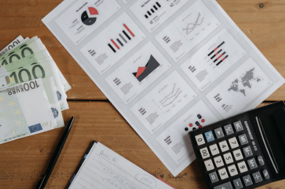

Matemática Financiera
5. Solicito un préstamo

Tras recordar los aumentos y disminuciones porcentuales, e investigar sobre conceptos fundamentales de matemática financiera es el momento de poner en práctica todo lo aprendido.
¿Recuerdas cuando simulaste las condiciones de un préstamo variando el número de plazos? Pues, es el momento de poner en práctica todo lo aprendido, ya que vas a calcular las condiciones en las qué debes aceptar un préstamo teniendo en cuánta puedes pagar cada mes, y determinar razonadamente si te me conviene contratarlo.
Estás preparado para afrontar el reto que te proponemos.
¡¡Adelante!!
Lectura facilitada
Tras recordar los aumentos y disminuciones porcentuales,
e investigar sobre conceptos fundamentales de matemática financiera
es el momento de poner en práctica todo lo aprendido.
¿Recuerdas cuando simulaste las condiciones de un préstamo
variando el número de plazos?
Pues, es el momento de poner en práctica todo lo aprendido.
Vas a calcular las condiciones
en las qué debes aceptar un préstamo
teniendo en cuenta cuánto puedes pagar cada mes,
y determinar razonadamente si te me conviene contratarlo.
Estás preparado para afrontar el reto que te proponemos.
¡¡Adelante!!
1. ¿Me interesa pedir el préstamo que puedo pagar?
Vamos a comenzar nuestro trabajo creando un grupo.
A diario, en el mundo actual, estos contenidos son fundamentales para tener una economía saneada, tanto personal como en casa, y llegar sin dificultades a final de mes.
En la página 2. ¿Cuánto dinero tengo? realizaste el estudio de los gastos e ingresos que tienes mensualmente, así como la variación de los precios de los productos que consumes habitualmente y determina tu propia previsión del IPC. Es el momento de la cantidad de dinero que podrías destinar a realizar una compra extra o pagar un préstamo, ya que no quieres esperar todo ese tiempo y te decidas a solicitar uno.
Si esta es tu opción, es el momento de analizar si te conviene hacerlo. Para ello:
- Calcula utilizando el informe de ingresos y gastos cuánto dinero puedes pagar cada mes para amortizar un préstamo.
- Utiliza internet para averiguar el rédito al que puedes solicitar un préstamo.
- Con esos datos calcula cuánto tardarás en devolver el préstamo y cuanto dinero vas a pagar en total.
- Escribe un informe que recoja todo lo anterior y añade las conclusiones que puedes obtener de él.
Exponen al resto de la clase el informe y las conclusiones, y realizad un debate en el que se exponga las ventajas e inconvenientes de recurrir a un préstamo.
Lectura facilitada
Vamos a comenzar nuestro trabajo creando un grupo.
Estos contenidos son fundamentales
para tener una economía saneada,
tanto personal como en casa,
y llegar sin dificultades a final de mes.
En la página 2. ¿Cuánto dinero tengo?
realizaste el estudio de los gastos
e ingresos que tienes mensualmente,
así como la variación de los precios
de los productos que consumes habitualmente
y determina tu propia previsión del IPC.
Es el momento de la cantidad de dinero
que podrías destinar a realizar
una compra extra o pagar un préstamo,
ya que no quieres esperar todo ese tiempo
y te decidas a solicitar uno.
Si esta es tu opción,
es el momento de analizar si te conviene hacerlo.
Para ello:
1. Calcula utilizando el informe de ingresos y gastos
cuánto dinero puedes pagar cada mes
para amortizar un préstamo.
2. Utiliza internet para averiguar el rédito
al que puedes solicitar un préstamo.
3. Con esos datos calcula
cuánto tardarás en devolver el préstamo
y cuánto dinero vas a pagar en total.
4. Escribe un informe que recoja todo lo anterior
y añade las conclusiones que puedes obtener de él.
Exponen al resto de la clase el informe y las conclusiones,
y realizad un debate en el que se exponga
las ventajas e inconvenientes de recurrir a un préstamo.
Motus dice ¿Te has preguntado…?
¿Cuánto saben tus compañeros o compañeras?
En esta actividad grupal te proponemos que intentes darte cuenta de todo lo que tu equipo sabe sobre este tema.
Cuando trabajamos en grupo aprendemos también en equipo. Hay compañeros que recuerdan muchas cosas, otras que hablan muy bien, otros que son muy habilidosos con las manos o con los pies, otras dibujan estupendamente…
Todos tenemos superpoderes para resolver las actividades, pero cuando los unimos, aprendemos juntos y somos capaces de resolver cualquier desafío.
Por ello es importante que en tu equipo sigáis estos consejos:
- Todo lo que una persona sabe lo comparte con los demás.
- Colaboramos en las tareas para que el equipo funcione.
- Valoramos los superpoderes de cada persona.
- Respetamos lo que cada persona ofrece al equipo.
2. Piensa
Para llegar a una meta, es conveniente que seas un buen o buena estratega. Es decir, tener métodos, técnicas, “trucos” para llegar antes o de forma más fácil donde tú quieres.
Ahora te voy a enseñar una estrategia, ¡Aprovéchala para alcanzar tu reto!
La estrategia es … ¡LA REFLEXIÓN!, que nos ayuda a pensar antes de contestar, lo que contribuye a autorregularnos para realizar la actividad correctamente.
¡Ánimo, que lo harás genial!
PASO 4: ¿Qué he aprendido?
En este último paso te voy a proponer que pienses en qué ha sido lo más importante de todo lo que has aprendido para conseguir el reto que te proponíamos.
Lo que descubras pensando en ello te servirá para cuando tengas que alcanzar retos parecidos en un futuro.
¡Para un momento y completa el PASO 4 de tu Diario de aprendizaje (¿Qué he aprendido?)!
- Pregunta a tu profesor o profesora si la rellenarás en papel o en el ordenador.
- Si la rellenas en el ordenador, ¡no te olvides de guardarla en tu ordenador cuando la termines!
¡Ánimo, que lo harás genial!
3. Para finalizar
Para concluir, vamos a recordar la estrategia o el “truco” que has aprendido durante este reto.
Esta estrategia o “truco” te lo enseñamos y lo trabajaste en la actividad grupal anterior . Vuelve a dicho apartado y repasa un momento en qué consistía y cómo te sirvió para llegar a conseguir el reto que te proponíamos.
Abre, ahora, el Diario de Aprendizaje y completa su última página.
En este apartado guardarás información valiosa sobre la estrategia, en qué actividades las has aplicado, si ha sido útil y qué te ha resultado más difícil.
¡Sigue trabajando así! ¡Lo estás haciendo genial!
Por tu esfuerzo has conseguido aquí la primera insignia que te acreditará como Mega-Estratega.
¡Enhorabuena!
Recuerda
- Pregunta a tu profesor o profesora si la rellenarás en papel o en el ordenador.
- Si la rellenas en el ordenador, ¡no te olvides de guardarla en tu ordenador cuando la termines!
4. Evaluamos nuestro trabajo
Para saber si vuestro trabajo es correcto podéis utilizar la siguiente rúbrica para evaluar vuestra presentación.
Obra publicada con Licencia Creative Commons Reconocimiento No comercial Compartir igual 4.0